Presales LatinTool
Guía de Usuario v1.1.12
1. Configuración Inicial
Al iniciar por primera vez, la aplicación te guiará a través de dos pasos fundamentales:
1.1 Selección de Directorio
Define dónde se guardarán tus datos locales (archivos JSON). Es recomendable elegir una carpeta vacía y segura.
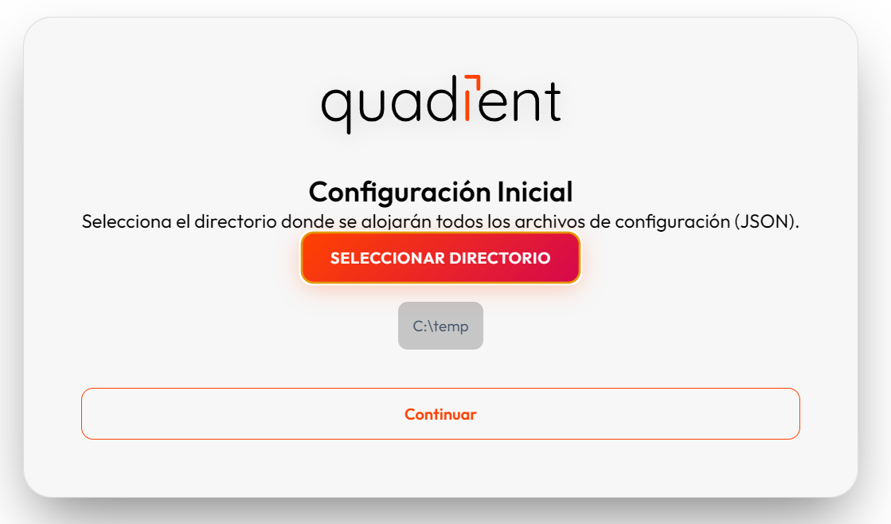1.2 Datos de Usuario
Ingresa tu nombre, correo y empresa. Estos datos personalizan la aplicación y los documentos generados.
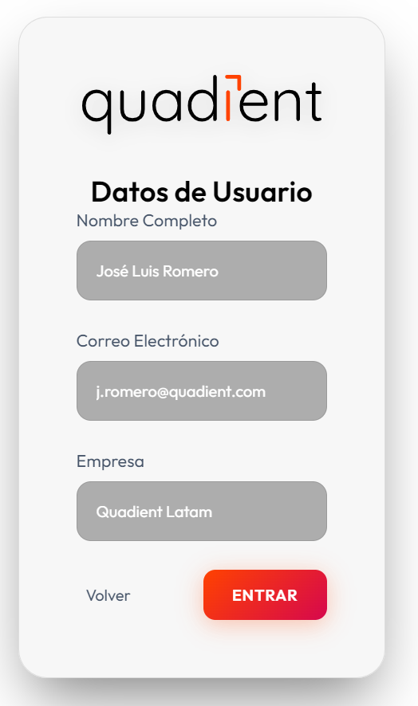- Carga de Datos: Una vez completado lo anterior, importa tu archivo CSV mediante el botón "Subir CSV".
2. Oportunidades
El núcleo de la gestión diaria de tu pipeline, organizado por cuentas estratificadas.
2.1 Detalles de Cuenta (Cuentas Header)
Ubicados en la cabecera gris de cada grupo de oportunidades.
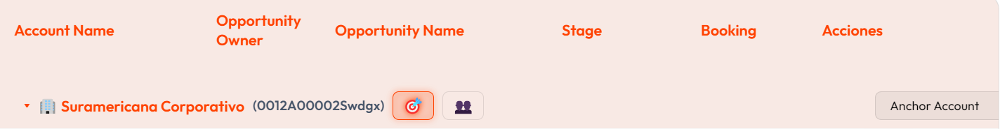2.1.1 Botón Plan de Ataque (🎯)
Define la estrategia comercial, licencias objetivo y cronograma estratégico de la cuenta.
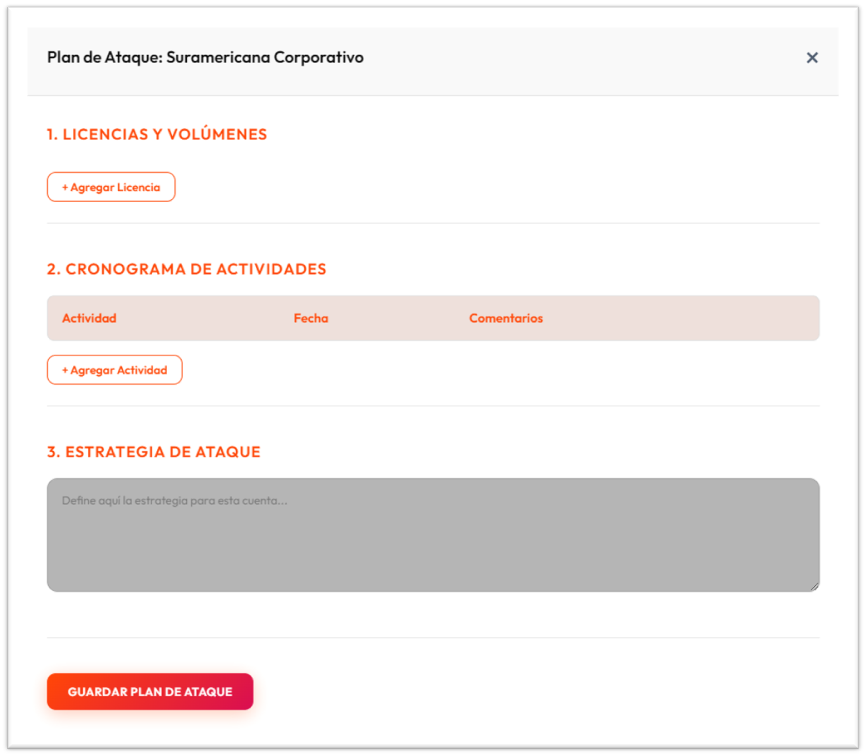2.1.1.2 Botón de Contactos (👥)
Gestiona los contactos clave y su nivel de influencia dentro de la cuenta.
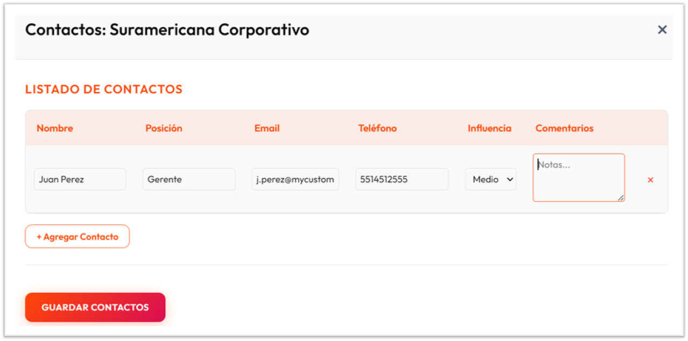2.2 Detalles de Oportunidad (Oportunidades Rows)
Acciones para gestionar el ciclo de vida técnico de cada oportunidad.

2.2.1 Botón Favoritos (⭐)
Destaca oportunidades críticas para seguimiento prioritario.
2.2.2 Botón Notas (📝)
Registra actualizaciones rápidas con guardado automático de la etapa actual.
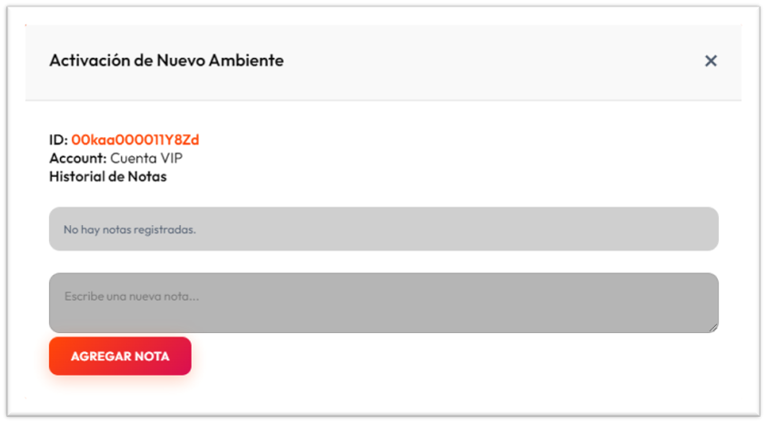2.2.3 Botón Actividades (Actividades)
Acceso a las herramientas principales de ejecución técnica:
- 2.2.3.1 PoCs (🧪): Objetivos, Casos de Uso y Documentos On-Demand. 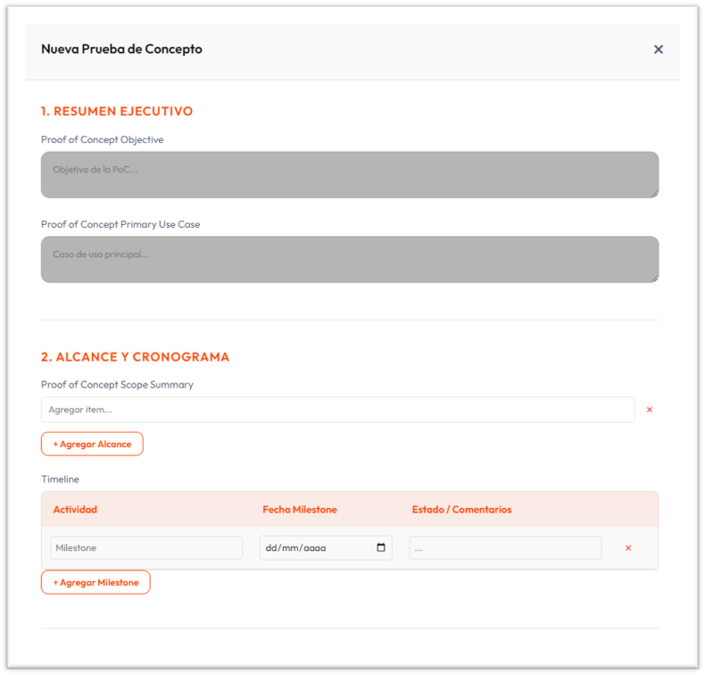
- 2.2.3.2 RFP/RFI (📄): Seguimiento de licitaciones y tareas. 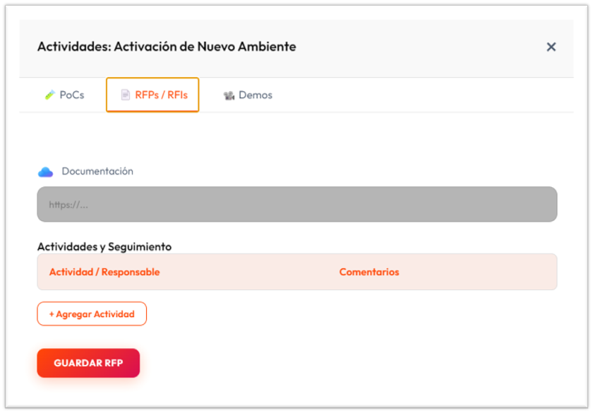
- 2.2.3.3 Demos (📽️): Checklists de preparación y grabaciones. 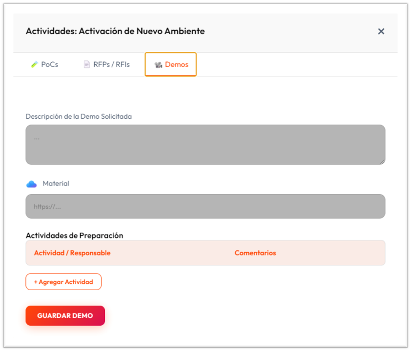
3. Calendario de Actividades
Vista consolidada de todos los hitos y fechas clave de tus actividades técnicas.
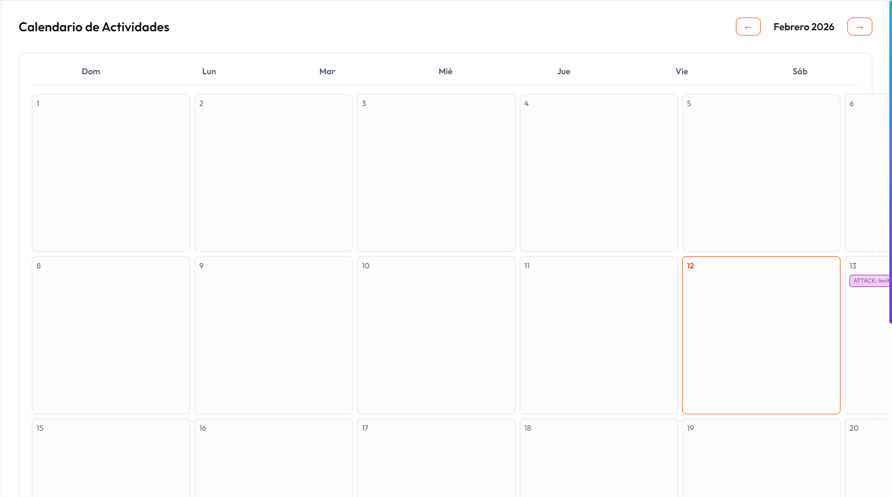4. Contactos
Tabla maestra global con todos los contactos registrados en el sistema.
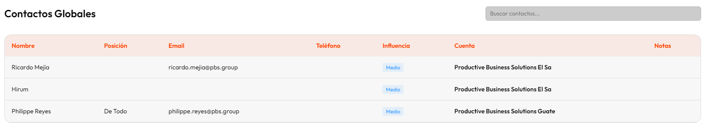5. Planes de Cuenta
Resumen ejecutivo de todas las cuentas con estrategia definida.
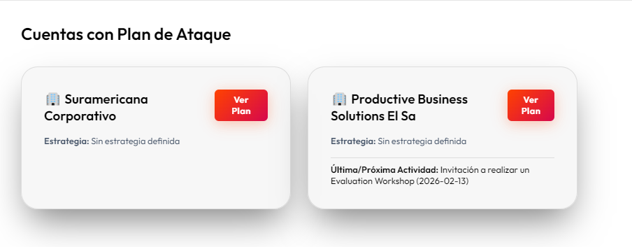6. Historial
Línea de tiempo detallada con toda la actividad de notas y cambios en oportunidades.
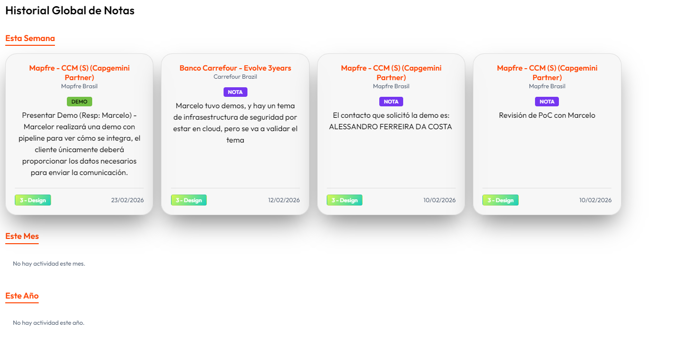7. Microsoft To-Do
Integración directa con tus tareas personales de Microsoft.
8. Configuración
Administra las variables del sistema y la integración con Quadient Cloud.
8.1 General
Ajustes de tema, directorio y plantillas de URL para el CRM.
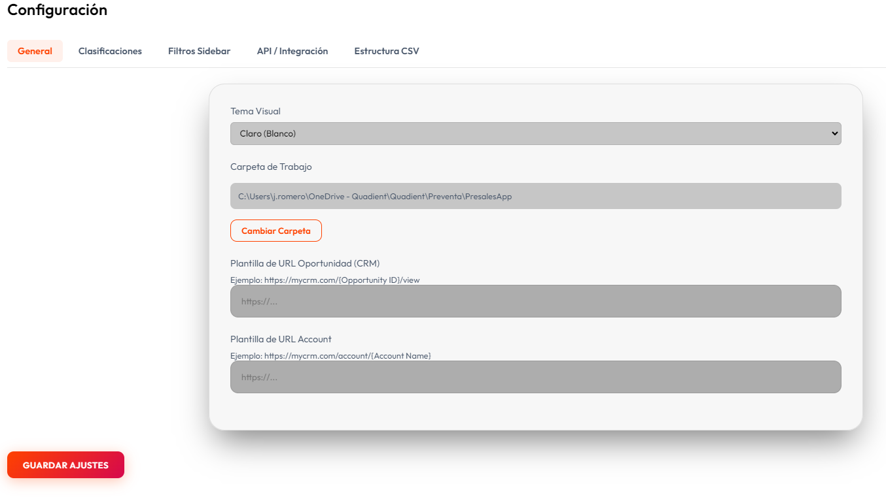8.2 Clasificaciones
Personaliza las categorías de cuentas utilizadas en la organización.
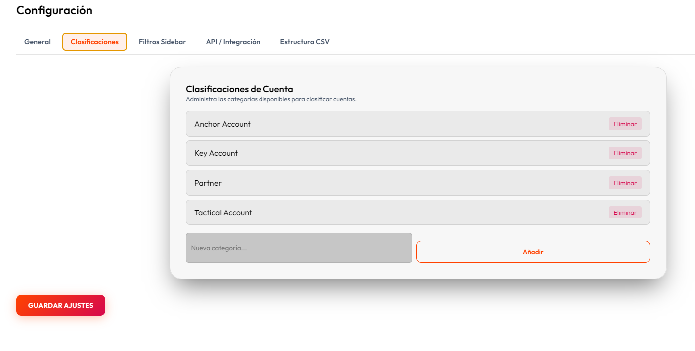8.3 Filtros Sidebar
Crea reglas lógicas avanzadas para segmentar tu pipeline en el sidebar.
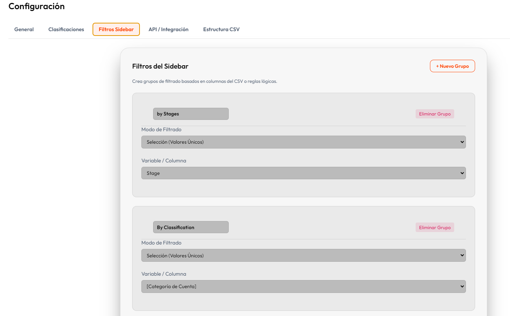8.4 API/Integración (Front Office)
Conexión segura con el API de generación de documentos de Quadient Cloud.
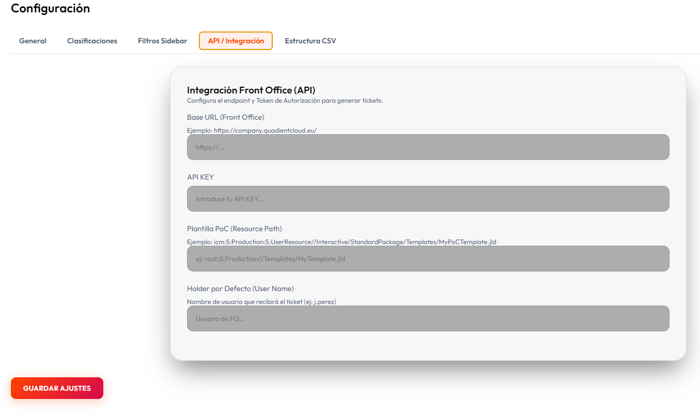8.5 Estructura CSV
Mapeo dinámico de las columnas de tu reporte CRM con los campos del sistema.
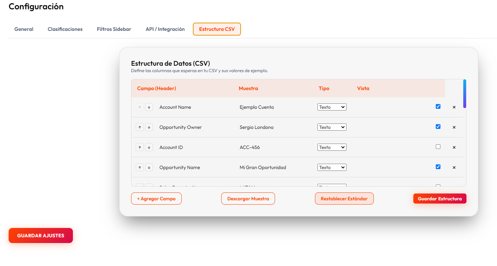